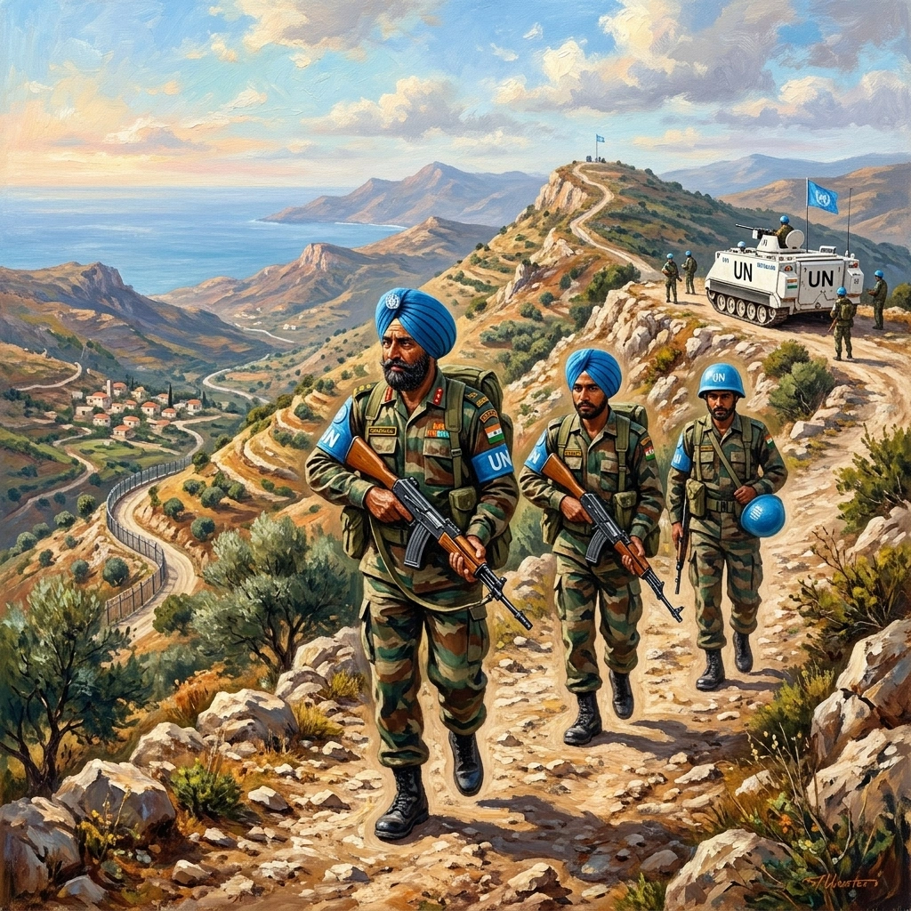

ਲੇਬਨਾਨ ਅਤੇ ਨੀਲਾ ਰੇਖਾ


ਸਿਰਲੇਖ: Lebanon and the Blue Line
ਸ਼੍ਰੇਣੀ: Lebanon and the Blue Line
ਕਲਾਕਾਰ: ਸਿੱਖ ਰੈਜੀਮੈਂਟal Centre
ਸਾਲ: ਇਤਿਹਾਸਕ
ਸ਼੍ਰੇਣੀ: Lebanon and the Blue Line
ਕਲਾਕਾਰ: ਸਿੱਖ ਰੈਜੀਮੈਂਟal Centre
ਸਾਲ: ਇਤਿਹਾਸਕ
ਲੇਬਨਾਨ ਅਤੇ ਨੀਲਾ ਰੇਖਾ
ਅਗਲੀ ਵੱਡੀ ਤੈਨਾਤੀ ਨਵੰਬਰ 2002 ਵਿੱਚ ਆਈ, ਜਦੋਂ 8 ਸਿੱਖ ਲੇਬਨਾਨ ਵਿੱਚ ਸੰਯੁਕਤ ਰਾਸ਼ਟਰ ਅੰਤਰਿਮ ਫੋਰਸ ਵਿੱਚ ਸ਼ਾਮਲ ਹੋਏ। ਅਪਰੇਸ਼ਨ ਵਿਜੇ ਦੌਰਾਨ ਟਾਈਗਰ ਹਿੱਲ 'ਤੇ ਇਸ ਦੇ ਪ੍ਰਦਰਸ਼ਨ ਤੋਂ ਬਾਅਦ ਚੁਣੀ ਗਈ, ਬਟਾਲੀਅਨ ਨੇ 380 ਵਰਗ ਕਿਲੋਮੀਟਰ ਦੀ ਜ਼ਿੰਮੇਵਾਰੀ ਲਈ, ਜਿਸ ਵਿੱਚ ਉਨ੍ਹੀ ਪੋਸਟਾਂ, ਅਠਤਾਲੀ ਪਿੰਡ ਅਤੇ ਇਜ਼ਰਾਈਲ ਅਤੇ ਹਿਜ਼ਬੁੱਲਾ ਵਿਚਕਾਰ ਬਲੂ ਲਾਈਨ ਦੇ 50 ਕਿਲੋਮੀਟਰ ਸ਼ਾਮਲ ਹਨ। ਇਸ ਦੇ ਸਿਪਾਹੀਆਂ ਨੇ ਹਸਬਾਨੀ ਨਦੀ 'ਤੇ ਹਵਾਈ ਉਲੰਘਣਾ, ਗੋਲਾਬਾਰੀ, ਪੱਥਰਬਾਜ਼ੀ ਅਤੇ ਝਗੜਿਆਂ ਦੀ ਨਿਗਰਾਨੀ ਕੀਤੀ, ਵਿਰੋਧੀ ਤਾਕਤਾਂ ਨਾਲ ਸੰਪਰਕ ਬਣਾਈ ਰੱਖਦੇ ਹੋਏ ਅਤੇ ਡਾਕਟਰੀ ਸੇਵਾਵਾਂ, ਪਾਣੀ ਦੀ ਸਪਲਾਈ, ਵਾਤਾਵਰਣ ਸੰਬੰਧੀ ਕੰਮ ਅਤੇ ਕੰਪਿਊਟਰ ਸਿੱਖਿਆ ਰਾਹੀਂ ਸਥਾਨਕ ਭਾਈਚਾਰਿਆਂ ਦੀ ਸਹਾਇਤਾ ਕਰਦੇ ਹੋਏ। ਇਸ ਨੇ ਦੋ ਵਾਰ ਅੰਤਰ-ਵਿਰੋਧੀ ਸ਼ੂਟਿੰਗ ਮੁਕਾਬਲੇ ਅਤੇ ਦਸ ਕਿਲੋਮੀਟਰ ਦੌੜ ਵੀ ਜਿੱਤੀ। 4 ਮਕੈਨਾਈਜ਼ਡ ਇਨਫੈਂਟਰੀ (1 ਸਿੱਖ) ਦੀ ਇੱਕ ਕੰਪਨੀ ਨੇ 2004 ਵਿੱਚ ਕਾਂਗੋ ਵਿੱਚ ਸੇਵਾ ਕੀਤੀ। 15 ਦਸੰਬਰ 2005 ਨੂੰ, 4 ਸਿੱਖਾਂ ਨੇ INDBATT-VIII ਦੇ ਰੂਪ ਵਿੱਚ ਲੇਬਨਾਨੀ ਬਲੂ ਲਾਈਨ ਦੇ ਲਗਭਗ 62 ਕਿਲੋਮੀਟਰ ਨੂੰ ਆਪਣੇ ਕਬਜ਼ੇ ਵਿੱਚ ਲਿਆ। ਜਦੋਂ 12 ਜੁਲਾਈ 2006 ਨੂੰ ਲੜਾਈ ਸ਼ੁਰੂ ਹੋਈ ਅਤੇ 14 ਅਗਸਤ ਦੀ ਸੰਯੁਕਤ ਰਾਸ਼ਟਰ-ਦਲਾਲੀ ਜੰਗਬੰਦੀ ਤੱਕ ਜਾਰੀ ਰਹੀ, ਇਸ ਦੀਆਂ ਪੋਸਟਾਂ ਨੇ ਨਜ਼ਦੀਕੀ ਤੋਪਖਾਨੇ ਅਤੇ ਹਵਾਈ ਹਮਲਿਆਂ ਦਾ ਸਾਹਮਣਾ ਕੀਤਾ, ਸੰਚਾਰ ਨੂੰ ਨੁਕਸਾਨ ਪਹੁੰਚਾਇਆ ਅਤੇ ਗੰਭੀਰ ਲੌਜਿਸਟਿਕ ਘਾਟਾਂ ਦਾ ਸਾਹਮਣਾ ਕੀਤਾ। ਬਟਾਲੀਅਨ ਨੇ ਨਿਰੀਖਣ, ਨਿਕਾਸੀ ਅਤੇ ਮਾਨਵਤਾਵਾਦੀ ਕਾਰਜਾਂ ਨੂੰ ਕਾਇਮ ਰੱਖਿਆ। ਗਸ਼ਤ ਬੇਸ ਖਿਆਮ ਨੂੰ ਹਵਾਈ ਹਮਲੇ ਦੁਆਰਾ ਤਬਾਹ ਕਰਨ ਤੋਂ ਬਾਅਦ, ਇੱਕ ਅਧਿਕਾਰੀ ਅਤੇ ਬਾਰਾਂ ਹੋਰ ਰੈਂਕ ਲਾਪਤਾ ਸੰਯੁਕਤ ਰਾਸ਼ਟਰ ਦੇ ਨਿਗਰਾਨ ਲਈ ਖਤਰਨਾਕ ਰਿਕਵਰੀ ਅਪ੍ਰੇਸ਼ਨ ਵਿੱਚ ਸ਼ਾਮਲ ਹੋਏ। ਬਟਾਲੀਅਨ ਨੇ ਜ਼ਰੂਰੀ ਸੇਵਾਵਾਂ ਨੂੰ ਬਹਾਲ ਕਰਨ ਲਈ ਭੋਜਨ, ਪਾਣੀ, ਦਵਾਈਆਂ, ਆਸਰਾ ਅਤੇ ਸਹਾਇਤਾ ਪ੍ਰਦਾਨ ਕੀਤੀ। ਇਸਦੀ ਸੇਵਾ ਨੇ 24 ਅਗਸਤ 2006 ਨੂੰ ਇੱਕ ਸੈਨਾ ਮੈਡਲ (ਵਿਸ਼ੇਸ਼), UNIFIL ਫੋਰਸ ਕਮਾਂਡਰਜ਼ ਯੂਨਿਟ ਪ੍ਰਸ਼ੰਸਾ ਪੱਤਰ, 81 ਪ੍ਰਸ਼ੰਸਾ ਪੱਤਰ ਅਤੇ ਇੱਕ ਲੇਬਨਾਨੀ ਯੁੱਧ ਮੈਡਲ ਲਿਆਇਆ।
ਅਗਲੀ ਵੱਡੀ ਤੈਨਾਤੀ ਨਵੰਬਰ 2002 ਵਿੱਚ ਆਈ, ਜਦੋਂ 8 ਸਿੱਖ ਲੇਬਨਾਨ ਵਿੱਚ ਸੰਯੁਕਤ ਰਾਸ਼ਟਰ ਅੰਤਰਿਮ ਫੋਰਸ ਵਿੱਚ ਸ਼ਾਮਲ ਹੋਏ। ਅਪਰੇਸ਼ਨ ਵਿਜੇ ਦੌਰਾਨ ਟਾਈਗਰ ਹਿੱਲ 'ਤੇ ਇਸ ਦੇ ਪ੍ਰਦਰਸ਼ਨ ਤੋਂ ਬਾਅਦ ਚੁਣੀ ਗਈ, ਬਟਾਲੀਅਨ ਨੇ 380 ਵਰਗ ਕਿਲੋਮੀਟਰ ਦੀ ਜ਼ਿੰਮੇਵਾਰੀ ਲਈ, ਜਿਸ ਵਿੱਚ ਉਨ੍ਹੀ ਪੋਸਟਾਂ, ਅਠਤਾਲੀ ਪਿੰਡ ਅਤੇ ਇਜ਼ਰਾਈਲ ਅਤੇ ਹਿਜ਼ਬੁੱਲਾ ਵਿਚਕਾਰ ਬਲੂ ਲਾਈਨ ਦੇ 50 ਕਿਲੋਮੀਟਰ ਸ਼ਾਮਲ ਹਨ। ਇਸ ਦੇ ਸਿਪਾਹੀਆਂ ਨੇ ਹਸਬਾਨੀ ਨਦੀ 'ਤੇ ਹਵਾਈ ਉਲੰਘਣਾ, ਗੋਲਾਬਾਰੀ, ਪੱਥਰਬਾਜ਼ੀ ਅਤੇ ਝਗੜਿਆਂ ਦੀ ਨਿਗਰਾਨੀ ਕੀਤੀ, ਵਿਰੋਧੀ ਤਾਕਤਾਂ ਨਾਲ ਸੰਪਰਕ ਬਣਾਈ ਰੱਖਦੇ ਹੋਏ ਅਤੇ ਡਾਕਟਰੀ ਸੇਵਾਵਾਂ, ਪਾਣੀ ਦੀ ਸਪਲਾਈ, ਵਾਤਾਵਰਣ ਸੰਬੰਧੀ ਕੰਮ ਅਤੇ ਕੰਪਿਊਟਰ ਸਿੱਖਿਆ ਰਾਹੀਂ ਸਥਾਨਕ ਭਾਈਚਾਰਿਆਂ ਦੀ ਸਹਾਇਤਾ ਕਰਦੇ ਹੋਏ। ਇਸ ਨੇ ਦੋ ਵਾਰ ਅੰਤਰ-ਵਿਰੋਧੀ ਸ਼ੂਟਿੰਗ ਮੁਕਾਬਲੇ ਅਤੇ ਦਸ ਕਿਲੋਮੀਟਰ ਦੌੜ ਵੀ ਜਿੱਤੀ। 4 ਮਕੈਨਾਈਜ਼ਡ ਇਨਫੈਂਟਰੀ (1 ਸਿੱਖ) ਦੀ ਇੱਕ ਕੰਪਨੀ ਨੇ 2004 ਵਿੱਚ ਕਾਂਗੋ ਵਿੱਚ ਸੇਵਾ ਕੀਤੀ। 15 ਦਸੰਬਰ 2005 ਨੂੰ, 4 ਸਿੱਖਾਂ ਨੇ INDBATT-VIII ਦੇ ਰੂਪ ਵਿੱਚ ਲੇਬਨਾਨੀ ਬਲੂ ਲਾਈਨ ਦੇ ਲਗਭਗ 62 ਕਿਲੋਮੀਟਰ ਨੂੰ ਆਪਣੇ ਕਬਜ਼ੇ ਵਿੱਚ ਲਿਆ। ਜਦੋਂ 12 ਜੁਲਾਈ 2006 ਨੂੰ ਲੜਾਈ ਸ਼ੁਰੂ ਹੋਈ ਅਤੇ 14 ਅਗਸਤ ਦੀ ਸੰਯੁਕਤ ਰਾਸ਼ਟਰ-ਦਲਾਲੀ ਜੰਗਬੰਦੀ ਤੱਕ ਜਾਰੀ ਰਹੀ, ਇਸ ਦੀਆਂ ਪੋਸਟਾਂ ਨੇ ਨਜ਼ਦੀਕੀ ਤੋਪਖਾਨੇ ਅਤੇ ਹਵਾਈ ਹਮਲਿਆਂ ਦਾ ਸਾਹਮਣਾ ਕੀਤਾ, ਸੰਚਾਰ ਨੂੰ ਨੁਕਸਾਨ ਪਹੁੰਚਾਇਆ ਅਤੇ ਗੰਭੀਰ ਲੌਜਿਸਟਿਕ ਘਾਟਾਂ ਦਾ ਸਾਹਮਣਾ ਕੀਤਾ। ਬਟਾਲੀਅਨ ਨੇ ਨਿਰੀਖਣ, ਨਿਕਾਸੀ ਅਤੇ ਮਾਨਵਤਾਵਾਦੀ ਕਾਰਜਾਂ ਨੂੰ ਕਾਇਮ ਰੱਖਿਆ। ਗਸ਼ਤ ਬੇਸ ਖਿਆਮ ਨੂੰ ਹਵਾਈ ਹਮਲੇ ਦੁਆਰਾ ਤਬਾਹ ਕਰਨ ਤੋਂ ਬਾਅਦ, ਇੱਕ ਅਧਿਕਾਰੀ ਅਤੇ ਬਾਰਾਂ ਹੋਰ ਰੈਂਕ ਲਾਪਤਾ ਸੰਯੁਕਤ ਰਾਸ਼ਟਰ ਦੇ ਨਿਗਰਾਨ ਲਈ ਖਤਰਨਾਕ ਰਿਕਵਰੀ ਅਪ੍ਰੇਸ਼ਨ ਵਿੱਚ ਸ਼ਾਮਲ ਹੋਏ। ਬਟਾਲੀਅਨ ਨੇ ਜ਼ਰੂਰੀ ਸੇਵਾਵਾਂ ਨੂੰ ਬਹਾਲ ਕਰਨ ਲਈ ਭੋਜਨ, ਪਾਣੀ, ਦਵਾਈਆਂ, ਆਸਰਾ ਅਤੇ ਸਹਾਇਤਾ ਪ੍ਰਦਾਨ ਕੀਤੀ। ਇਸਦੀ ਸੇਵਾ ਨੇ 24 ਅਗਸਤ 2006 ਨੂੰ ਇੱਕ ਸੈਨਾ ਮੈਡਲ (ਵਿਸ਼ੇਸ਼), UNIFIL ਫੋਰਸ ਕਮਾਂਡਰਜ਼ ਯੂਨਿਟ ਪ੍ਰਸ਼ੰਸਾ ਪੱਤਰ, 81 ਪ੍ਰਸ਼ੰਸਾ ਪੱਤਰ ਅਤੇ ਇੱਕ ਲੇਬਨਾਨੀ ਯੁੱਧ ਮੈਡਲ ਲਿਆਇਆ।
ਮੋਬਾਈਲ 'ਤੇ ਖੋਲ੍ਹੋ
ਆਪਣੇ ਫ਼ੋਨ 'ਤੇ ਇਸ ਕਲਾ ਰਿਕਾਰਡ ਨੂੰ ਦੇਖਣ ਲਈ ਸਕੈਨ ਕਰੋ।